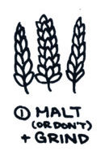
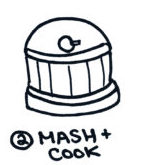
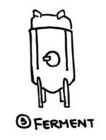
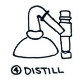
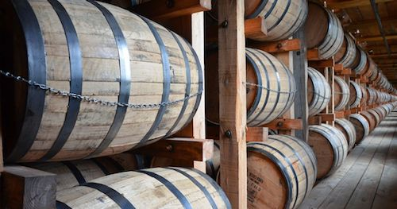
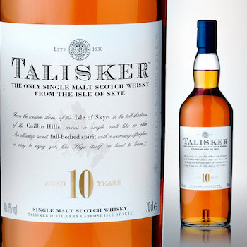

Malt Whisky Process
The Pot Still process by which Malt Whisky is made is a batch process that may be divided into four main stages: Malting, Mashing, Fermentation and Distillation.
Malting
The barley is first screened to remove any foreign matter and then soaked for two or three days in tanks of water known as steeps. After this it is spread out on a concrete floor known as the malting floor and allowed to germinate. Germination may take from 8 to 12 days depending on the season of the year, the quality of the barley used and other factors. During germination the barley secretes the enzyme diastase which makes the starch in the barley soluble, thus preparing it for conversion into sugar. Throughout this period the barley must be turned at regular intervals to control the temperature and rate of germination.
At the appropriate moment germination is stopped by drying the malted barley or green malt in the malt kiln. More usually nowadays malting is carried out in Saladin boxes or in drum maltings. in both of which the process is controlled mechanically. Instead of germinating on the distillery floor, the grain is contained in large rectangular boxes (Saladin) or in large cylindrical drums. Temperature is controlled by blowing air at selected temperatures upwards through the germinating grain, which is turned mechanically. A recent development caused by the rapid expansion of the Scotch Whisky Industry is for distilleries to obtain their malt from centralized maltings which supply a number of distilleries, thereby enabling the malting process to be carried out more economically.
Mashing
The dried malt is ground in a mill and the grist, as it is now called. is mixed with hot water in a large circular vessel called a mash tun. The soluble starch is thus converted into a sugary liquid known as wort. This is drawn off from the mash tun and the solids remaining are removed for use as cattle food.
Fermentation
After cooling, the wort is passed into large vessels holding anything from 9,000 to 45,000 litres of liquid where it is fermented by the addition of yeast. The living yeast attacks the sugar in the wort and converts it into crude alcohol. Fermentation takes about 48 hours and produces a liquid known as wash, containing alcohol of low strength, some unfermentable matter and certain by-products of fermentation.
Distillation
Malt Whisky is distilled twice in large copper Pot Stills. The liquid wash is heated to a point at which the alcohol becomes vapor. This rises up the still and is passed into the cooling plant where it is condensed into liquid state. The cooling plant may take the form of a coiled copper tube or worm that is kept in continuously running cold water, or it may be another type of condenser.
The first distillation separates the alcohol from the fermented liquid and eliminates the residue of the yeast and unfermentable matter. This distillate, known as low wines, is then passed into another still where it is distilled a second time. The first runnings from this second distillation are not considered potable and it is only when the spirit reaches an acceptable standard that it is collected in the Spirit Receiver. Again, towards the end of the distillation. the spirit begins to fall off in strength and quality. It is then no longer collected as spirit but drawn off and kept, together with the first running, for redistillation with the next low wines.
Grain Whisky Process
The Patent Still process by which Grain Whisky is made is continuous in operation and differs from the Pot Still process in a few ways:
- The mash consists of a proportion of malted barley together with unmalted cereals.
- Any unmalted cereals used are cooked under steam pressure in Converters for about 3.5 hours. During this time the mixture of grain and water is agitated by stirrers inside the cooker.
- The starch cells in the grain burst and when this liquid is transferred to the mash tun, with the malted barley, the diastase in the latter converts the starch into sugar.
- The wort is collected at a specific gravity lower than in the case of the Pot Still process.
- Distillation is carried out in a Patent or Coffey Still and the spirit collected at a much higher strength
Maturation
Both Malt and Grain Whisky must be matured after distillation has been completed. The new spirit is filled into casks of oak wood which, being permeable, allows air to pass in and evaporation takes place. By this means the harsher constituents in the new spirit are removed and it becomes in due course a mellow whisky. Malt Whisky which contains more of these flavory constituents takes longer to mature than Grain Whisky and is often left in the cask for 15 years or even longer. The period of maturation for both Malt and Grain Whisky is also affected by the size of casks used. the strength at which the spirit is stored and the temperature and humidity of the warehouse.
Blending
After maturation the different whiskies may be blended together with other whiskies (see Types of Scotch Whisky for more detail on the difference between single-malt/grain whiskies and blended whiskies).The blend is then reduced to the strength required by the addition of soft water. The different whiskies in the blend will have derived some color from the casks in which they have been matured, but the degree of color will vary from one whisky to another. Whisky matured in former fresh oak sherry casks will usually be a darker color than that which has been matured in refilled whisky casks. The blender aims at uniformity in his product and he may bring his whisky to a definite standard color by adding, if necessary, a small amount of coloring solution prepared from caramelized sugar, which is infinitesimal in relation to the volume of whisky involved. The whisky is then filtered carefully.
Packaging and Labelling
The final stage in production of Scotch Whisky is labelling and packaging. Most Scotch Whiskies are marketed at home and abroad in branded bottles. A Scotch whisky label comprises several elements that indicate aspects of production, age, bottling, and ownership. Some of these elements are regulated by the SWR, and some reflect tradition and marketing.
The label always features a declaration of the malt or grain whiskies used. A single malt Scotch whisky is one that is entirely produced from malt in one distillery. One may also encounter the term "single cask", signifying the bottling comes entirely from one cask. The term "blended malt" signifies that single malt whisky from different distilleries are blended in the bottle. The Cardhu distillery also began using the term "pure malt" for the same purpose, causing a controversy in the process over clarity in labelling – the Glenfiddich distillery was using the term to describe some single malt bottlings. As a result, the Scotch Whisky Association declared that a mixture of single malt whiskies must be labelled a "blended malt". The use of the former terms "vatted malt" and "pure malt" is prohibited. The term "blended malt" is still debated, as some bottlers maintain that consumers confuse the term with "blended Scotch whisky", which contains some proportion of grain whisky.
The brand name featured on the label is usually the same as the distillery name (for example, the Talisker Distillery labels its whiskies with the Talisker name).In addition to requiring that Scotch whisky be distilled in Scotland, the SWR require that it also be bottled and labelled in Scotland. Labels may also indicate the region of the distillery (for example, Islay or Speyside).
Alcoholic strength is expressed on the label with "Alcohol By Volume" ("ABV") or sometimes simply "Vol". Typically, bottled whisky is between 40% and 46% ABV. Whisky is considerably stronger when first emerging from the cask—normally 60–63% ABV. Water is then added to create the desired bottling strength. If the whisky is not diluted before bottling, it can be labelled as cask strength.
A whisky's age may be listed on the bottle providing a guarantee of the youngest whisky used. An age statement on the bottle, in the form of a number, must reflect the age of the youngest whisky used to produce that product. A whisky with an age statement is known as guaranteed age whisky. Scotch whisky without an age statement may, by law, be as young as three years old.[1] In the early 21st century, such "No age statement" whiskies became more common, as distilleries responded to the depletion of aged stocks caused by improved sales. A label may carry a distillation date or a bottling date. Whisky does not mature once bottled, so if no age statement is provided, one may calculate the age of the whisky if both the distillation date and bottling date are given.
Labels may also carry various declarations of filtration techniques or final maturation processes. A Scotch whisky labelled as "natural" or "non-chill-filtered" has not been through a filtration process during bottling that removes compounds that some consumers see as desirable. Whisky is aged in various types of casks—and often in used sherry or port casks—during distinct portions of the maturation process, and will take on characteristics, flavor and aromas from such casks. Special casks are sometimes used at the end of the maturation process, and such whiskies may be labelled as "wood finished", "sherry/port finished", and so on.